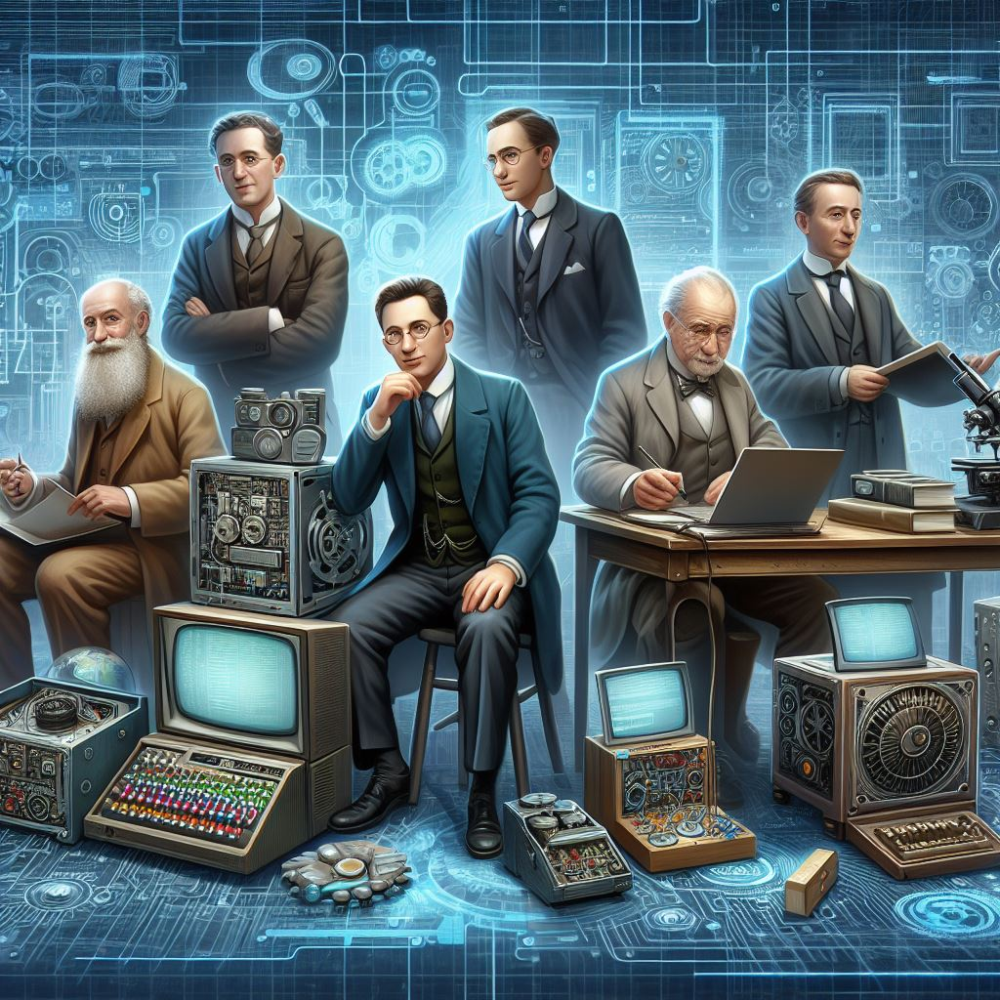

Un Viaje a Través de los Genios de la Informática

En los anales de la historia, los genios de la informática han dejado una huella imborrable. Permíteme llevarte en un recorrido fascinante a través de sus logros y descubrimientos.
Había una vez una matemática visionaria llamada Ada Lovelace. En el siglo XIX, Ada colaboró con Charles Babbage, un ingeniero mecánico, en el diseño de la Máquina Analítica. Ada no solo imaginó la máquina, sino que también escribió algoritmos para ella, convirtiéndose así en la primera programadora de la historia.
Pero la historia no termina ahí. En la Segunda Guerra Mundial, otro genio entró en escena: Alan Turing. Alan, un brillante matemático y criptógrafo británico, se enfrentó al desafío de descifrar los códigos nazis. Su trabajo en la máquina Enigma allanó el camino para las computadoras electrónicas y sentó las bases de la informática moderna.
El tiempo avanzó, y dos nombres resonaron en todo el mundo: Vint Cerf y Bob Kahn. Estos dos visionarios desarrollaron el protocolo TCP/IP, que dio origen a Internet. Gracias a ellos, la comunicación global se volvió posible, y los datos comenzaron a fluir a través de los cables submarinos y las redes de computadoras.
Pero no podemos olvidar a los titanes de la industria: Steve Jobs y Bill Gates. Steve, con su creatividad sin límites, nos dio productos como el iPhone y la Macintosh. Mientras tanto, Bill llevó las computadoras personales a los hogares de todo el mundo con Windows. Su rivalidad y visión transformaron la forma en que interactuamos con la tecnología.
Y así llegamos al presente. Hoy, nombres como Elon Musk, Tim Berners-Lee y Grace Hopper continúan empujando los límites. La inteligencia artificial, el aprendizaje automático y la ciberseguridad son los nuevos horizontes. Nuestro viaje no termina aquí; sigue siendo emocionante y lleno de posibilidades.
Así que prepárate para más descubrimientos y avances en este emocionante viaje a través de los genios de la informática. 🌟